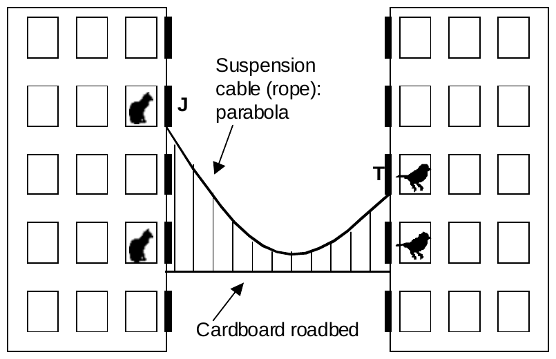

The 2004 28th Annual ICPC World Finals · Problem I
Jan and Tereza live in adjoining buildings and their apartments face one another. For their school science project, they want to construct a miniature suspension bridge made of rope, string, and cardboard connecting their two buildings. Two pieces of identical-length rope form the main suspension cables, which are attached to the bottoms of their windows. The cardboard “roadbed” of the bridge is held up by numerous strings tied to the main cables. The horizontal bridge roadbed lies exactly one meter below the lowest point of the ropes. For aesthetic reasons, the roadbed should be at least two meters below the lower edge of the lower of the two students’ windows. The laws of physics dictate that each suspension rope forms a parabola.
While Jan and Tereza don’t plan to walk on this model bridge, there is a serious problem: some of the occupants of the apartment buildings own pet cats, and others own pet birds. Jan and Tereza want to be sure that their bridge doesn’t provide a way for a cat to reach a bird. Jan and Tereza have observed that a cat cannot jump as high as 0.5 meters, and will not jump down as far as 3 meters. So as long as the bridge roadbed lies at least 0.5 meters above the bottom of a cat’s window, or at least 3 meters below the bottom of a cat’s window, the cat will not jump onto it. Likewise, a cat that successfully jumps onto the roadbed will not be able to reach a bird’s window if the roadbed lies at least 0.5 meters below the bottom of the bird’s window, or at least 3 meters above the bottom of the bird’s window. Cats are concerned only with reaching birds, and they do not worry about returning home.
The figure below shows Jan’s apartment (“J”) and Tereza’s apartment (“T”) with a rope joining the bottoms of their windows and the cardboard roadbed one meter below the lowest point of the rope. The cat on the second floor can reach the bird on the second floor using the bridge.

You must write a program to determine how much rope Jan and Tereza need to construct each cable for a bridge that won’t endanger any of the birds in their two buildings.
Input for your program will be: the distance between the two buildings, in meters; the floor numbers for Jan and Tereza (with the lowest, or ground floor in each building numbered 1), the kinds of pets living in all the floors up through Jan’s floor, and the kinds of pets living in all the floors up through Tereza’s floor. Your program must determine the length of the longest cable that can be used to suspend a bridge between the two buildings that does not permit any cat to reach a bird by means of the bridge. The roadbed of the bridge must lie at least 1 meter above the ground and must lie exactly one meter below the lowest point of the suspension cables. It must also lie at least two meters below the lower of the two windows of Jan and Tereza. All rooms in the buildings are exactly 3 meters tall; all windows are exactly 1.5 meters tall and the bottom of each window lies exactly 1 meter above the floor of each room.
The input will describe several cases, each of which has three lines. The first line will contain two positive integers j and t (2 ≤ j, t ≤ 25) representing Jan’s floor and Tereza’s floor, and a real value d (1 ≤ d ≤ 25) representing the distance, in meters, between the buildings. The second line will contain j uppercase letters ℓ1, ℓ2, ..., ℓj separated by whitespace. Letter ℓk is B if a bird lives on floor number k of Jan’s building, C if a cat lives on floor number k, and N if neither kind of pet lives on floor number k. The third line similarly contains t uppercase letters representing the same kind of information for the floors in Tereza’s building. The last case is followed by a line containing three zeroes.
For each case, print the case number (1, 2, …) and the largest value c such that two cables, each of length c, can be used to suspend a bridge from the lower edges of Jan’s and Tereza’s windows so that the bridge floor lies one meter below the lowest point in the cable, lies at least 1 meter above the ground, lies at least two meters below Jan and Tereza’s windows, and does not allow a cat to reach a bird. The length should be rounded to three places following the decimal point. If no such bridge can be constructed, print “impossible.” Print a blank line between the output for consecutive cases. Your output format should imitate the sample output.
4 3 5.0 N C N C N B B 4 3 5.0 C B C C B C B 0 0 0
Case 1: 14.377 Case 2: impossible